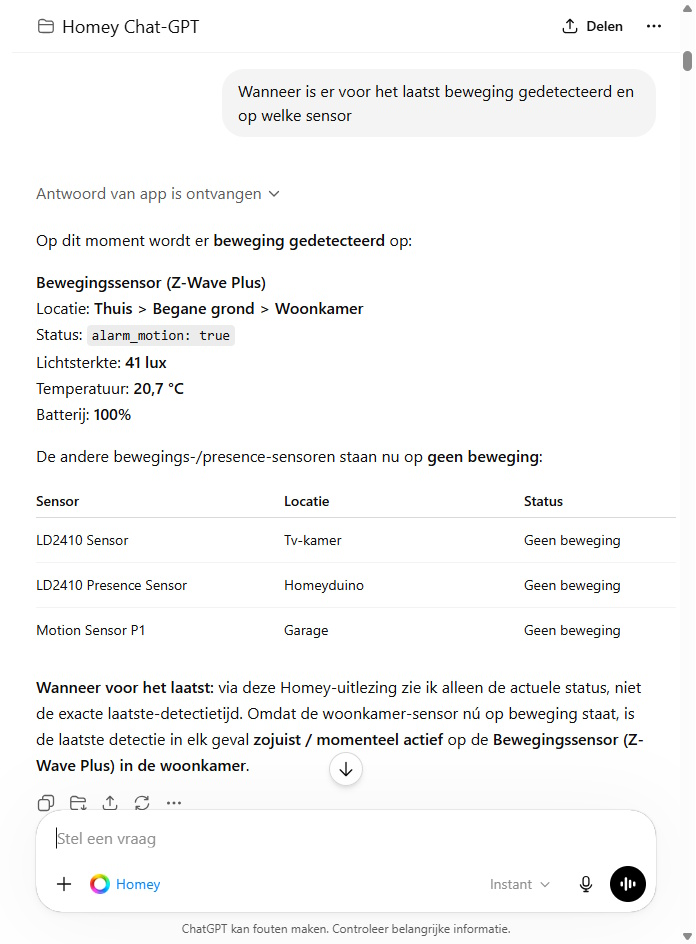

Er zijn van die momenten waarop je ineens merkt dat de toekomst weer een stukje dichterbij is gekomen. Niet met vliegende auto's of pratende koelkasten die niemand nodig heeft, maar met iets veel simpelers: je slimme huis dat eindelijk begrijpt wat je bedoelt.
Athom, het bedrijf achter Homey, heeft aangekondigd dat Homey nu beschikbaar is als app binnen ChatGPT. Dat betekent dat je je Homey-account rechtstreeks kunt koppelen aan ChatGPT en daarna in gewone taal opdrachten kunt geven aan je slimme woning. Niet via ingewikkelde menu's, niet door eindeloos Flow-kaarten te zoeken, maar gewoon door te beschrijven wat je wilt.
En dat is interessanter dan het op het eerste gezicht lijkt. Want Homey was natuurlijk al een krachtig smart home platform. Je kon er lampen, sensoren, thermostaten, schakelaars, slimme stekkers, beveiliging, gordijnen en nog veel meer apparaten mee aan elkaar koppelen. Maar de drempel zat vaak niet in wat er technisch mogelijk was. De drempel zat in het bedenken, bouwen en onderhouden van al die automatiseringen.
Kort samengevat
Homey in ChatGPT maakt het mogelijk om je smart home te bedienen, te bevragen en verder te automatiseren met natuurlijke taal. Vooral het maken en aanpassen van Flows kan hierdoor veel laagdrempeliger worden.
Wat is de nieuwe Homey ChatGPT-app?
Homey was eerder al te koppelen aan AI-systemen via de Homey MCP Server. Dat was vooral interessant voor de avontuurlijke smart home gebruiker: technisch leuk, krachtig, maar niet bepaald iets wat je even tussen de koffie en de avondroutine instelt.
Met de nieuwe ChatGPT-app wordt dat eenvoudiger. Homey is nu direct beschikbaar binnen ChatGPT, waardoor je je Homey-account met één klik kunt koppelen. Daarna kan ChatGPT dezelfde mogelijkheden gebruiken als via de MCP Server, maar dan zonder dat je zelf handmatig een connector hoeft aan te maken.
- Eén klik koppelen → Homey verbinden met ChatGPT zonder technisch gedoe.
- Apparaten bedienen → Lampen, stekkers, scènes en andere apparaten aansturen vanuit ChatGPT.
- Status controleren → Vragen welke lampen aan staan, welke sensoren iets meten of welke apparaten actief zijn.
- Flows starten → Bestaande Flows en Advanced Flows activeren via een gewone vraag.
- Flows maken en aanpassen → Beschrijven wat je wilt automatiseren en ChatGPT laten helpen met de opzet.

Waarom is dit groter dan zomaar een extra integratie?
Wie al langer met Homey werkt, weet hoe krachtig Flows kunnen zijn. Je kunt vrijwel alles aan elkaar knopen. Als de voordeur opengaat na zonsondergang, dan mag de halverlichting aan. Als de luchtvochtigheid in de badkamer te hoog wordt, dan mag de ventilatie harder. Als niemand thuis is en er wordt beweging gedetecteerd, dan wil je misschien een melding ontvangen.
Dat is precies wat een smart home slim maakt. Niet dat je een lamp met een app kunt bedienen, maar dat apparaten op elkaar reageren zonder dat jij daar telkens iets voor hoeft te doen. Toch zit daar ook meteen de uitdaging. Want hoe meer apparaten, kamers, sensoren en routines je hebt, hoe sneller je smart home een soort digitale meterkast wordt. Er zit veel in, het werkt meestal prima, maar je moet wel weten waar je moet zoeken.
ChatGPT kan daar verandering in brengen. Je hoeft niet meer exact te weten welke Flow-kaart je nodig hebt. Je hoeft niet eerst te bedenken of iets een trigger, voorwaarde of actie is. Je kunt gewoon beginnen met de wens:
"Ik wil dat de buitenverlichting automatisch aangaat na zonsondergang, maar alleen als er iemand thuis is, en dat alles om half twaalf weer uitgaat."
Dat soort opdrachten zijn voor mensen logisch, maar voor klassieke smart home software vaak omslachtig. Met AI ontstaat er een tussenlaag die jouw bedoeling vertaalt naar de technische logica van Homey. En dát maakt deze integratie zo interessant.
Wat kun je er in de praktijk mee?
De meest voor de hand liggende toepassing is directe bediening. Je vraagt ChatGPT bijvoorbeeld welke lampen nog aan staan, schakelt de verlichting in de woonkamer uit of start je avondroutine. Handig, maar eerlijk is eerlijk: dat konden we via spraakassistenten als Google Assistant en Alexa natuurlijk al in zekere mate.
De echte winst zit daarom niet alleen in bedienen, maar vooral in begrijpen, combineren en automatiseren. ChatGPT kan functioneren als een soort smart home assistent die niet alleen knoppen indrukt, maar ook meedenkt over hoe je woning slimmer kan reageren.
Slimmere Flows bouwen
Stel je voor dat je een Flow wilt maken voor de ochtend. Niet gewoon "lamp aan om 07:00", maar iets slimmer:
- De slaapkamerlamp moet langzaam aangaan als het een werkdag is.
- De verwarming mag alleen omhoog als de temperatuur lager is dan 19 graden.
- De koffiezetter mag pas aan als er beweging beneden wordt gedetecteerd.
- Op vrije dagen moet de Flow juist niet automatisch starten.
Dit kun je zelf prima bouwen in Homey, zeker als je al wat ervaring hebt. Maar voor veel gebruikers is het precies zo'n automatisering waarbij je halverwege denkt: welke kaart had ik ook alweer nodig? ChatGPT kan helpen om zo'n idee om te zetten naar een logische Flow of Advanced Flow.
Je slimme woning bevragen
Een ander interessant voordeel is dat je je woning vragen kunt stellen. Niet alleen: "Zet de lampen uit", maar ook:
- "Welke lampen staan er nog aan?"
- "Welke ramen zijn nog open?"
- "Welke apparaten gebruiken op dit moment energie?"
- "Welke Flows zijn vandaag gestart?"
- "Waarom ging de verlichting in de gang vannacht aan?"
Vooral dat laatste is interessant. Naarmate je meer automatiseringen maakt, wordt het soms lastig om te achterhalen waarom iets gebeurde. Ging de lamp aan door een bewegingssensor? Door een schema? Door een andere Flow? Een AI-assistent die kan helpen zoeken in je smart home logica kan dan ontzettend waardevol worden.
Flows opruimen en verbeteren
Veel Homey-gebruikers herkennen dit vast: je begint met een paar simpele Flows, maar na een paar jaar heb je er tientallen. Sommige gebruik je dagelijks, andere zijn ooit gemaakt voor een test, een tijdelijk project of een apparaat dat inmiddels niet eens meer in huis staat.
ChatGPT zou kunnen helpen om overzicht terug te brengen. Denk aan vragen als: "Welke Flows gebruiken deze sensor?", "Welke automatiseringen schakelen de woonkamerlampen aan?" of "Kun je deze twee Flows samenvoegen tot één duidelijkere Advanced Flow?"
Daarmee wordt AI niet alleen een afstandsbediening, maar ook een onderhoudsmonteur voor je digitale huis.
Welke mogelijkheden biedt dit voor de toekomst?
Als je een beetje door de marketingtaal heen kijkt, zie je dat dit pas het begin is. De eerste stap is dat ChatGPT je Homey-installatie kan bedienen en helpen met Flows. De volgende stap is dat AI patronen gaat herkennen en zelf suggesties gaat doen.
Van opdrachten naar voorstellen
Nu geef je zelf nog de opdracht. Straks kan een assistent misschien zeggen:
"Ik zie dat je de verlichting in de woonkamer bijna iedere avond rond 22:45 uitschakelt. Zal ik hier een automatische Flow voor maken?"
Of:
"De verwarming gaat vaak aan terwijl er niemand thuis lijkt te zijn. Wil je dat ik een energiezuinigere routine voorstel?"
Dat klinkt misschien futuristisch, maar eigenlijk is het precies waar smart homes altijd naartoe wilden. Niet alleen reageren op vaste regels, maar meedenken met het ritme van je huishouden.
Energiebeheer wordt slimmer
Ook op het gebied van energie liggen er grote kansen. Homey heeft al mogelijkheden voor energie-inzicht, slimme meters, zonnepanelen, laadpalen en apparaten die je verbruik beïnvloeden. Combineer dat met AI en je krijgt interessante scenario's.
Denk aan een woning die zelf helpt bepalen wanneer de vaatwasser draait, wanneer de auto laadt, wanneer de boiler opwarmt of wanneer de batterij juist even moet wachten. Zeker in combinatie met dynamische energieprijzen, zonnepanelen en thuisbatterijen kan dit enorm interessant worden.
Een persoonlijker smart home
De meeste automatiseringen zijn nu nog vrij hard ingesteld. Als dit gebeurt, dan doe dat. Maar mensen leven niet altijd volgens vaste regels. De ene avond zit je op de bank, de andere avond ben je laat thuis, en soms wil je gewoon dat het huis zich even aanpast zonder dat je drie apps hoeft te openen.
Een AI-laag bovenop Homey kan op termijn zorgen voor een persoonlijker smart home. Niet alleen een huis dat reageert op sensoren, maar een huis dat beter begrijpt wat handig, logisch of comfortabel is op dat moment.
Wat zijn de risico's van AI in je smart home?
Toch is het belangrijk om niet alleen enthousiast te zijn. AI in je smart home is krachtig, maar juist daarom moet je er bewust mee omgaan. Een slimme lamp verkeerd schakelen is niet zo spannend. Maar zodra AI toegang krijgt tot routines, aanwezigheid, sloten, verwarming, energieverbruik of beveiliging, wordt het serieuzer.
1. Te veel vertrouwen in AI
ChatGPT kan helpen, maar ChatGPT is niet onfeilbaar. Een voorgestelde Flow kan logisch klinken en tóch verkeerd uitpakken. Misschien wordt een voorwaarde vergeten, wordt een kamer verkeerd geïnterpreteerd of wordt een actie toegevoegd die je eigenlijk niet wilde.
Controleer daarom altijd wat er wordt aangemaakt of aangepast. Zeker bij automatiseringen rondom verwarming, beveiliging, sloten, elektrische apparaten of energiebeheer. AI mag helpen, maar jij blijft de eindverantwoordelijke.
2. Privacy en inzicht in je huishouden
Een smart home weet veel meer over je dan je soms denkt. Wanneer je thuis bent. Wanneer je slaapt. Welke kamers je gebruikt. Welke apparaten aan staan. Wanneer de voordeur opengaat. Hoeveel energie je verbruikt. Dat zijn geen onschuldige gegevens.
Wanneer je AI koppelt aan je smart home, moet je dus goed nadenken over welke toegang je geeft en waarvoor. Niet iedere functie hoeft overal bij te kunnen. Hoe minder toegang een assistent nodig heeft, hoe beter.
3. Verkeerde interpretaties
Gewone taal is handig, maar soms ook vaag. "Zet beneden alles uit" klinkt duidelijk, maar bedoel je dan alleen de lampen? Ook de televisie? De ventilatie? De kerstverlichting buiten? Of misschien de slimme stekker waar je aquarium op zit?
Bij slimme woningen is context belangrijk. Hoe krachtiger de opdrachten worden, hoe belangrijker het is dat ChatGPT bevestiging vraagt voordat er iets ingrijpends gebeurt.
4. Afhankelijkheid van cloud en abonnementen
Een ander aandachtspunt is afhankelijkheid. Homey zelf is juist interessant omdat veel lokaal kan draaien, vooral bij Homey Pro. Maar AI-functies draaien vaak via externe diensten. Dat betekent dat beschikbaarheid, abonnementen en voorwaarden kunnen veranderen.
Gebruik AI daarom vooral als extra laag, niet als enige manier om je huis te bedienen. Je Homey-app, fysieke schakelaars en basisautomatiseringen moeten gewoon blijven werken, ook als een AI-dienst tijdelijk niet beschikbaar is.
Huisvanvandaag-tip
Gebruik ChatGPT vooral om Flows te bedenken, te controleren en overzicht te krijgen. Laat kritische functies zoals sloten, alarmen en zware elektrische apparaten niet zonder controle door AI aanpassen.
Voor wie is dit vooral interessant?
Deze nieuwe koppeling is interessant voor bestaande Homey-gebruikers die meer uit hun systeem willen halen, maar ook voor mensen die twijfelen of Homey niet te ingewikkeld is. Juist die laatste groep kan profiteren van natuurlijke taal.
Want laten we eerlijk zijn: smart home is fantastisch, maar het kan ook intimiderend zijn. Protocollen als Zigbee, Z-Wave, Matter, Thread, 433 MHz en infrarood zijn leuk voor de liefhebber, maar de meeste mensen willen vooral dat hun huis doet wat logisch is.
En dat is precies waar Homey sterk in is. Het verbindt apparaten van allerlei merken en protocollen met elkaar. Door daar ChatGPT bovenop te zetten, wordt het geheel toegankelijker. Je hoeft minder te denken als programmeur en meer als bewoner.
Volgende stap
Wil je zelf ervaren hoe krachtig AI en domotica samen kunnen zijn? Dan is Homey op dit moment één van de meest complete smart home platformen om mee te starten of verder uit te bouwen. Zeker wanneer je al meerdere slimme apparaten in huis hebt, zoals Philips Hue, IKEA Trådfri, slimme stekkers, sensoren, thermostaten of beveiligingscamera's, kan Homey de centrale laag worden die alles met elkaar verbindt.
- Gebruik Homey om apparaten van verschillende merken samen te brengen.
- Maak Flows voor verlichting, aanwezigheid, energiebeheer en comfort.
- Laat ChatGPT meedenken over nieuwe automatiseringen.
- Controleer voorgestelde Flows altijd voordat je ze actief gebruikt.
- Begin klein en breid je smart home stap voor stap uit.
Begin bijvoorbeeld met één praktische automatisering. Laat de verlichting automatisch aangaan bij thuiskomst. Schakel apparaten uit wanneer iedereen weg is. Of maak een avondroutine waarmee de lampen dimmen, de televisie aangaat en overbodige stekkers worden uitgeschakeld.
Conclusie
De komst van Homey als officiële ChatGPT-app voelt als een logische, maar belangrijke stap in de ontwikkeling van het slimme huis. Jarenlang moesten wij leren hoe onze smart home software werkte. Nu ontstaat er een nieuwe fase waarin onze slimme woning steeds beter leert begrijpen wat wij bedoelen.
Dat maakt Homey niet ineens magisch en het maakt ChatGPT zeker niet foutloos. Maar de combinatie is veelbelovend. Homey levert de koppeling met je apparaten, sensoren en Flows. ChatGPT zorgt voor een laag waarmee je die techniek eenvoudiger kunt bedienen, begrijpen en uitbreiden.
Voor wie serieus aan de slag wil met smart home is dit een mooi moment om Homey opnieuw op de radar te zetten. Niet alleen als hub voor slimme apparaten, maar als fundament voor een woning die steeds meer aanvoelt als het Huis van de Toekomst. Alleen dit keer niet als demonstratie in Rosmalen, maar gewoon bij je thuis.
Aan de slag met je eigen slimme huis?
Wil je meer uit je slimme apparaten halen en automatiseringen bouwen die écht bij je dagelijks leven passen? Bekijk dan de mogelijkheden van Homey en ontdek hoe je jouw huis stap voor stap slimmer, comfortabeler en toekomstbestendiger maakt.